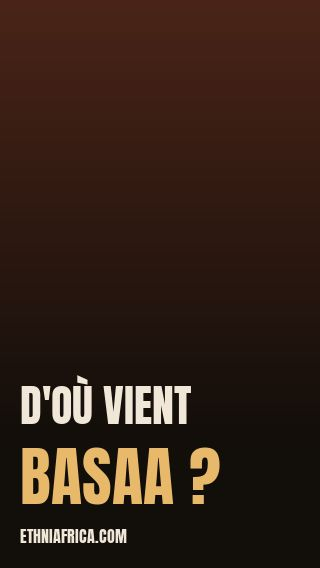
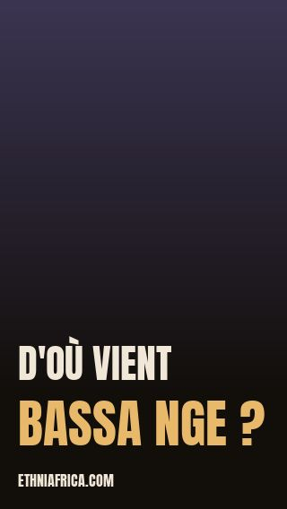

Nous les rangeons dans trois familles de langues différentes, à des milliers de kilomètres les uns des autres.

0:42
0:38Ils se disent Bassa. Les voyageurs et les missionnaires européens ont écrit ce nom sans jamais dire ce qu'il voulait dire.
Ils se disent Bàsáa. « Bassa » est la façon dont l'administration coloniale l'a écrit.
Le nom a été fixé par l'administration britannique, pour les distinguer des Bassa Komu — un autre peuple, arrivé presque en même temps.
Nous ne l'expliquons pas, et aucune source que nous citons ne le fait.
Ce qu'on peut dire : dans deux cas sur trois, l'orthographe « Bassa » ne vient pas du peuple. C'est la façon dont une administration extérieure a écrit son nom. Une partie de la confusion a été fabriquée en chemin.
Un autre peuple encore, au Sénégal et en Guinée. Le nom se ressemble ; nous ne lui connaissons aucun lien avec les trois ci-dessus.
Pour aller au fond : chaque fiche, avec toutes ses sources.
Un silence déclaré, pas un oubli.
Deux peuples peuvent porter le même nom sans avoir rien en commun — et deux peuples proches peuvent porter des noms qui ne se ressemblent pas.
Si vous connaissez une source sur l'un de ces noms, elle sera lue.